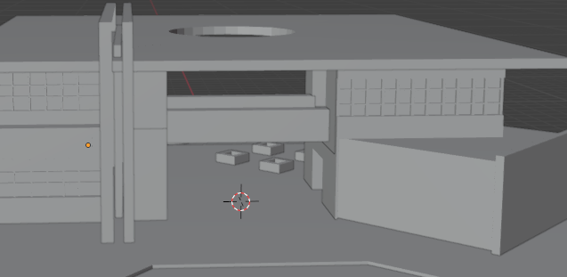

Modelado y Animación de una Garrapata
Realizar el modelado con creación y modificación de geometría con polígonos

El modelado consiste en la elaboración geométrica de la forma del objeto elegido y se complementa con el color, textura, renderización. La animación consiste en dar movimiento al objeto, usando transformaciones geométricas, propeidades físicas o algún modelo matemático que defina el patrón del movimiento.
En la Unidad I, el estudiante describirá los elementos computacionales requeridos para modelar y animar un objeto 3D, considerando sus propiedades para determinar las opciones de movimiento.
Modelado y Animación de una Garrapata
movimiento articulado en un insecto
.
modelado poligonal, texturizado, iluminación, aniamción articulada
En la unidad II el estudiante obtendrá las herramientas para modelar objetos 2D y 3D con alguna de las técnicas vistas en clase.
Realizar el modelado con creación y modificación de geometría con polígonos
Creación de una casa
.
En la unidad III el estudiante dará animación a los objetos creados, atendiendo a sus características de movimiento.
keyframing de transformaciones geométricas

movimiento frame by frame
.
En la unidad IV el estudiante utilizará los modelos y animaciones creados en aplicaciones como los videojuegos.
Modelado de la Facultad de Matemáticas
Técnicas variadas de modelado
.